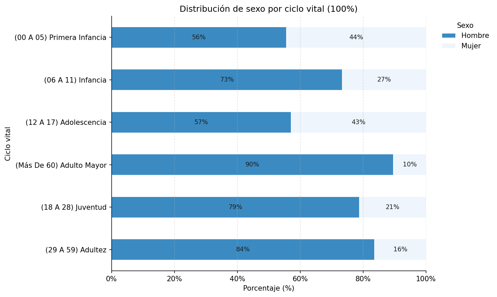
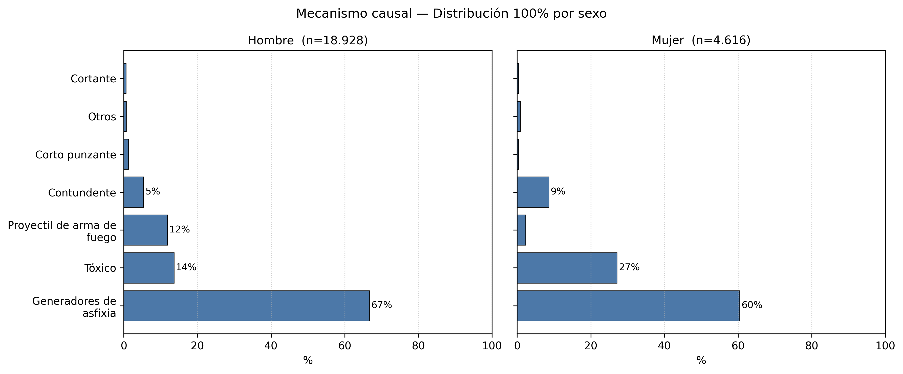

URL#
import pandas as pd
from IPython.display import display
# Cargar los datos
url = "https://raw.githubusercontent.com/jthowinsson/Suicidio_Colombia/main/Presuntos_Suicidios_con_Coor.csv"
df = pd.read_csv(url, encoding="utf-8")
# Guardar nombres originales
nombres_originales = df.columns.tolist()
# Función para limpiar nombres de columnas
def limpiar_nombres(cols):
cols = cols.astype(str)
# Quitar tildes
mapping_tildes = str.maketrans("áéíóúÁÉÍÓÚ", "aeiouAEIOU")
cols = cols.str.translate(mapping_tildes)
# A minúsculas
cols = cols.str.lower()
# Reemplazar cualquier carácter no alfanumérico por guion bajo
cols = cols.str.replace(r'[^a-zA-Z0-9]+', '_', regex=True)
# Limpiar guiones bajos extra al inicio/final
cols = cols.str.strip('_')
return cols
# Aplicar limpieza
df.columns = limpiar_nombres(df.columns)
# Guardar nombres limpios
nombres_limpios = df.columns.tolist()
# Crear tabla de comparación
tabla = pd.DataFrame({
'Nombre original': nombres_originales,
'Nombre estandarizado': nombres_limpios
})
# Agregar la fuente como fila final (pie de página dentro de la tabla)
fuente = pd.DataFrame([[
'<em>Fuente: <a href="https://www.datos.gov.co/Justicia-y-Derecho/Presuntos-Suicidios-Colombia-2015-a-2024-Cifras-de/f75u-mirk/about_data" target="_blank">datos.gov.co</a></em>',
''
]], columns=['Nombre original', 'Nombre estandarizado'])
tabla_final = pd.concat([tabla, fuente], ignore_index=True)
# Mostrar tabla con estilo (sin fuente en el caption)
display(tabla_final.style
.set_caption("Mapeo de nombres de columnas y Estandarización")
.set_table_attributes('style="border-collapse: collapse; width: 100;"')
.set_properties(**{
'border': '1px solid #ddd',
'padding': '10px',
'font-size': '14px',
'text-align': 'left'
})
.set_table_styles([
{'selector': 'caption',
'props': [('font-size', '16px'), ('font-weight', 'bold'), ('color', '#333'), ('margin-bottom', '10px')]},
{'selector': 'th',
'props': [('background-color', '#1f77b4'), ('color', 'white'), ('font-weight', 'bold'), ('text-align', 'center')]},
{'selector': 'tr:nth-child(even):not(:last-child)',
'props': [('background-color', '#f7f7f7')]},
{'selector': 'tr:last-child',
'props': [('font-style', 'italic'), ('color', '#555'), ('font-size', '12px'), ('background-color', '#f9f9f9'), ('border-top', '2px solid #eee')]},
{'selector': 'td, th',
'props': [('padding', '8px')]}
])
.hide(axis="index")
)
| Nombre original | Nombre estandarizado |
|---|---|
| ID | id |
| Año del hecho | a_o_del_hecho |
| Grupo de edad de la victima | grupo_de_edad_de_la_victima |
| Grupo Mayor Menor de Edad | grupo_mayor_menor_de_edad |
| Edad judicial | edad_judicial |
| Ciclo Vital | ciclo_vital |
| Sexo de la victima | sexo_de_la_victima |
| Estado Civil | estado_civil |
| País de Nacimiento de la Víctima | pais_de_nacimiento_de_la_victima |
| Escolaridad | escolaridad |
| Pertenencia Grupal | pertenencia_grupal |
| Mes del hecho | mes_del_hecho |
| Dia del hecho | dia_del_hecho |
| Rango de Hora del Hecho X 3 Horas | rango_de_hora_del_hecho_x_3_horas |
| Código Dane Municipio | codigo_dane_municipio |
| Municipio del hecho DANE | municipio_del_hecho_dane |
| Departamento del hecho DANE | departamento_del_hecho_dane |
| Código Dane Departamento | codigo_dane_departamento |
| Escenario del Hecho | escenario_del_hecho |
| Zona del Hecho | zona_del_hecho |
| Actividad Durante el Hecho | actividad_durante_el_hecho |
| Circunstancia del Hecho | circunstancia_del_hecho |
| Manera de Muerte | manera_de_muerte |
| Mecanismo Causal | mecanismo_causal |
| Diagnostico Topográfico de la Lesión | diagnostico_topografico_de_la_lesion |
| Presunto Agresor | presunto_agresor |
| Condición de la Víctima | condicion_de_la_victima |
| Medio de Desplazamiento o Transporte | medio_de_desplazamiento_o_transporte |
| Servicio del Vehículo | servicio_del_vehiculo |
| Clase o Tipo de Accidente | clase_o_tipo_de_accidente |
| Objeto de Colisión | objeto_de_colision |
| Servicio del Objeto de Colisión | servicio_del_objeto_de_colision |
| Razón del Suicidio | razon_del_suicidio |
| Localidad del Hecho | localidad_del_hecho |
| Ancestro Racial | ancestro_racial |
| Codigo_Dane_Municipio_norm | codigo_dane_municipio_norm |
| Muni_Cod | muni_cod |
| Muni_Nom | muni_nom |
| Depto_Cod | depto_cod |
| Depto_Nom | depto_nom |
| latitud | latitud |
| longitud | longitud |
| Fuente: datos.gov.co |
print(df.shape) #este es para verificar las dimensiones de un dataframe
(23544, 42)
print("\n--- información general---")
print(df.info())
--- información general---
<class 'pandas.core.frame.DataFrame'>
RangeIndex: 23544 entries, 0 to 23543
Data columns (total 42 columns):
# Column Non-Null Count Dtype
--- ------ -------------- -----
0 id 23544 non-null int64
1 a_o_del_hecho 23544 non-null int64
2 grupo_de_edad_de_la_victima 23544 non-null object
3 grupo_mayor_menor_de_edad 23544 non-null object
4 edad_judicial 23544 non-null object
5 ciclo_vital 23544 non-null object
6 sexo_de_la_victima 23544 non-null object
7 estado_civil 23544 non-null object
8 pais_de_nacimiento_de_la_victima 23544 non-null object
9 escolaridad 23544 non-null object
10 pertenencia_grupal 23544 non-null object
11 mes_del_hecho 23544 non-null object
12 dia_del_hecho 23544 non-null object
13 rango_de_hora_del_hecho_x_3_horas 23544 non-null object
14 codigo_dane_municipio 23544 non-null int64
15 municipio_del_hecho_dane 23544 non-null object
16 departamento_del_hecho_dane 23544 non-null object
17 codigo_dane_departamento 23544 non-null int64
18 escenario_del_hecho 23544 non-null object
19 zona_del_hecho 23544 non-null object
20 actividad_durante_el_hecho 23544 non-null object
21 circunstancia_del_hecho 23544 non-null object
22 manera_de_muerte 23544 non-null object
23 mecanismo_causal 23544 non-null object
24 diagnostico_topografico_de_la_lesion 23544 non-null object
25 presunto_agresor 23544 non-null object
26 condicion_de_la_victima 23544 non-null object
27 medio_de_desplazamiento_o_transporte 23544 non-null object
28 servicio_del_vehiculo 23544 non-null object
29 clase_o_tipo_de_accidente 23544 non-null object
30 objeto_de_colision 23544 non-null object
31 servicio_del_objeto_de_colision 23544 non-null object
32 razon_del_suicidio 23544 non-null object
33 localidad_del_hecho 23544 non-null object
34 ancestro_racial 23544 non-null object
35 codigo_dane_municipio_norm 23544 non-null int64
36 muni_cod 23536 non-null float64
37 muni_nom 23536 non-null object
38 depto_cod 23536 non-null float64
39 depto_nom 23536 non-null object
40 latitud 23536 non-null float64
41 longitud 23536 non-null float64
dtypes: float64(4), int64(5), object(33)
memory usage: 7.5+ MB
None
# 3. vista preliminar de los datos (head)
import pandas as pd
print("---primeras filas---")
print(df.head())
# configurar pandas para mostrar tdas las columnas y todo el hancho
pd.set_option('display.max_columns', 50)
pd.set_option('display.max_colwidth', None)
---primeras filas---
id a_o_del_hecho grupo_de_edad_de_la_victima \
0 1 2015 (18 a 19)
1 2 2015 (25 a 29)
2 3 2015 (35 a 39)
3 4 2015 (55 a 59)
4 5 2015 (45 a 49)
grupo_mayor_menor_de_edad edad_judicial ciclo_vital \
0 b) Mayores de Edad (>18 años) (18 a 19) (18 a 28) Juventud
1 b) Mayores de Edad (>18 años) (25 a 28) (18 a 28) Juventud
2 b) Mayores de Edad (>18 años) (35 a 39) (29 a 59) Adultez
3 b) Mayores de Edad (>18 años) (55 a 59) (29 a 59) Adultez
4 b) Mayores de Edad (>18 años) (45 a 49) (29 a 59) Adultez
sexo_de_la_victima estado_civil pais_de_nacimiento_de_la_victima \
0 Mujer Soltero(a) Colombia
1 Hombre Soltero(a) Colombia
2 Hombre Unión libre Colombia
3 Hombre Soltero(a) Colombia
4 Hombre Soltero(a) Colombia
escolaridad ... \
0 Educación inicial y educación preescolar ...
1 Educación inicial y educación preescolar ...
2 Educación inicial y educación preescolar ...
3 Educación inicial y educación preescolar ...
4 Educación media o secundaria alta ...
razon_del_suicidio localidad_del_hecho ancestro_racial \
0 Sin información No aplica Indigena
1 Conflicto con pareja o ex pareja No aplica Mestizo
2 Conflicto con pareja o ex pareja No aplica Mestizo
3 Sin información No aplica Mestizo
4 Sin información No aplica Mestizo
codigo_dane_municipio_norm muni_cod muni_nom depto_cod depto_nom \
0 66572 66572.0 PUEBLO RICO 66.0 RISARALDA
1 81001 81001.0 ARAUCA 81.0 ARAUCA
2 81220 81220.0 CRAVO NORTE 81.0 ARAUCA
3 63470 63470.0 MONTENEGRO 63.0 QUINDÍO
4 63130 63130.0 CALARCÁ 63.0 QUINDÍO
latitud longitud
0 5.222043 -76.030801
1 7.072726 -70.747408
2 6.303913 -70.204286
3 4.565057 -75.749827
4 4.520982 -75.646085
[5 rows x 42 columns]
# 9. contar frecuencias de mecanismos
import pandas as pd
conteo_mecanismos = df["mecanismo_causal"].value_counts()
print(conteo_mecanismos)
mecanismo_causal
Generadores de asfixia 15410
Tóxico 3829
Proyectil de arma de fuego 2345
Contundente 1405
Corto punzante 255
Cortante 135
Térmico 80
Por determinar 35
Caústico 19
Corto contundente 15
Agente o mecanismo explosivo 8
Punzante 5
Eléctrico 2
Mecanismo o agente explosivo 1
Name: count, dtype: int64
import pandas as pd
import matplotlib.pyplot as plt
from matplotlib.ticker import MultipleLocator, PercentFormatter
# === Construir rowpct (100% por ciclo vital) ===
col_sexo = next(c for c in df.columns if 'sexo' in c.lower())
col_ciclo = next(c for c in df.columns if 'ciclo' in c.lower())
sexo = df[col_sexo].astype(str).str.strip().str.title().replace({'Nan':'Desconocido'})
ciclo = df[col_ciclo].astype(str).str.strip().str.title().replace({'Nan':'Desconocido'})
tab = pd.crosstab(ciclo, sexo) # conteos
rowpct = (tab.div(tab.sum(1), axis=0) * 100).round(1) # % por fila
rowpct = rowpct.loc[tab.sum(1).sort_values(ascending=False).index] # ordenar por n
# === Gráfica monocrómica ===
fig, ax = plt.subplots(figsize=(10,6), dpi=150)
cats = rowpct.columns.tolist()
cmap = plt.cm.Blues_r
colors = [cmap(0.35 + 0.6*i/max(1, len(cats)-1)) for i in range(len(cats))]
rowpct.plot(kind='barh', stacked=True, ax=ax, color=colors, edgecolor='white', linewidth=0.8)
ax.set_xlim(0, 100)
ax.xaxis.set_major_locator(MultipleLocator(20))
ax.xaxis.set_major_formatter(PercentFormatter(100, decimals=0))
ax.grid(axis='x', linestyle='--', alpha=0.35)
ax.set_xlabel('Porcentaje (%)'); ax.set_ylabel('Ciclo vital')
ax.set_title('Distribución de sexo por ciclo vital (100%)')
for s in ['top','right']: ax.spines[s].set_visible(False)
ax.legend(title='Sexo', bbox_to_anchor=(1.03,1), loc='upper left', frameon=False)
for i, (_, row) in enumerate(rowpct.iterrows()):
cum = 0
for val in row:
if val >= 3:
ax.text(cum + val/2, i, f'{val:.0f}%', ha='center', va='center', fontsize=9, color='#1f1f1f')
cum += val
plt.tight_layout(); plt.show()

import numpy as np, pandas as pd, matplotlib.pyplot as plt, textwrap as tw
COL_MEC = 'mecanismo_causal'
COL_SEX = 'sexo_de_la_victima'
TOP_K = 6
# Limpieza
df_ = df[[COL_SEX, COL_MEC]].dropna().copy()
df_[COL_SEX] = df_[COL_SEX].astype(str).str.strip().str.title()
df_[COL_MEC] = df_[COL_MEC].astype(str).str.strip().replace({'nan':'Falta_dato'})
# Top-K global + Otros
top = df_[COL_MEC].value_counts().index[:TOP_K].tolist()
df_['mec_plot'] = np.where(df_[COL_MEC].isin(top), df_[COL_MEC], 'Otros')
# % por sexo
tab = df_.value_counts([COL_SEX,'mec_plot']).unstack(fill_value=0)
rowpct = tab.div(tab.sum(1), axis=0)*100
# Selecciona los 2 sexos más frecuentes para panel limpio
sexos = tab.sum(1).sort_values(ascending=False).index[:2].tolist()
cats = rowpct.sum(0).sort_values(ascending=False).index.tolist()
fig, axes = plt.subplots(1, len(sexos), figsize=(12,5), dpi=300, sharey=True)
if len(sexos)==1: axes=[axes]
for ax, sx in zip(axes, sexos):
vals = rowpct.loc[sx, cats]
y = np.arange(len(cats))
ax.barh(y, vals.values, color='#4c78a8', edgecolor='black', linewidth=0.6)
for i,v in enumerate(vals.values):
if v>=5:
ax.text(v+0.5, i, f'{v:.0f}%', va='center', ha='left', fontsize=9)
ax.set_title(f'{sx} (n={int(tab.loc[sx].sum()):,})'.replace(',', '.'), fontsize=11)
ax.set_xlim(0, 100); ax.set_xlabel('%')
ax.invert_yaxis()
ax.grid(axis='x', linestyle=':', alpha=0.6)
axes[0].set_yticks(np.arange(len(cats)))
axes[0].set_yticklabels(["\n".join(tw.wrap(c, 20)) for c in cats], fontsize=10)
fig.suptitle('Mecanismo causal — Distribución 100% por sexo', fontsize=12)
plt.tight_layout()
# plt.savefig('mecanismo_por_sexo_panel.pdf', bbox_inches='tight')
plt.show()
